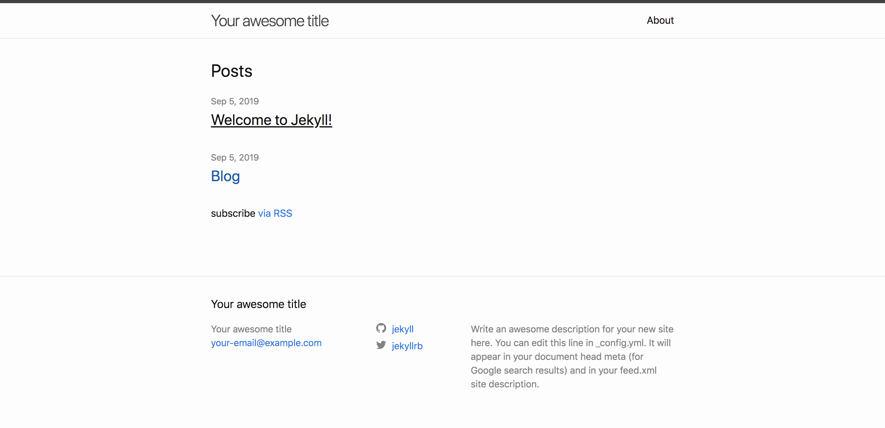
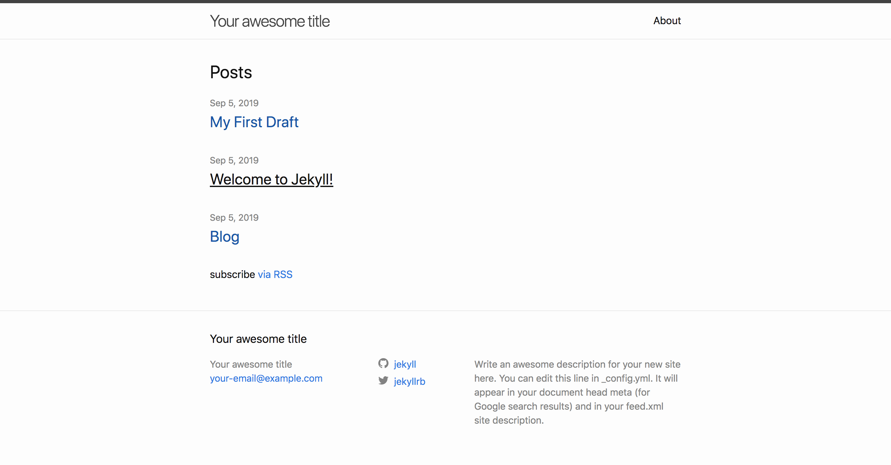

Chapter 1 Jekyll Installation
Have Ruby installed
ruby -v
Have gem installed
gem -v
Install Jekyll
gem install bundler jekyll
jekyll -v
Chapter 2 Creating a site
Create Jekyll Site
jekyll new my-awesome-site
cd my-awesome-site
bundle exec jekyll serve
Open your browser to localhost:4000

[info] These are important files
- yml file
- configuration
- gemfile
- dependency
Chapter 3 Front Matter
open _posts By modifying the front matter in the page you will be able to change the way it displays on the website Front matter is also associated with the URL of the page
---
layout: post
title: "Welcome to Jekyll!"
date: 2019-09-05 15:18:50 +0000
categories: jekyll update
---
Chapter 4 Writting Post
Create md file in the _posts folder 2019-09-05-my-first-blog-post.md
This post will show up on the webpage
Add the front matter variable, layout, title, date, categories

Chapter 5 Draft
Create _drafts folder
Create md file in the _drafts folder My-first-draft.md
Build draft file
jekyll serve --draft
The draft will show up on the webpage 
Chapter 6 Creating Page
Create md file Contact.md
Add front matter variable
---
layout: page
title: contact
---
The contact page will show up on the webpage